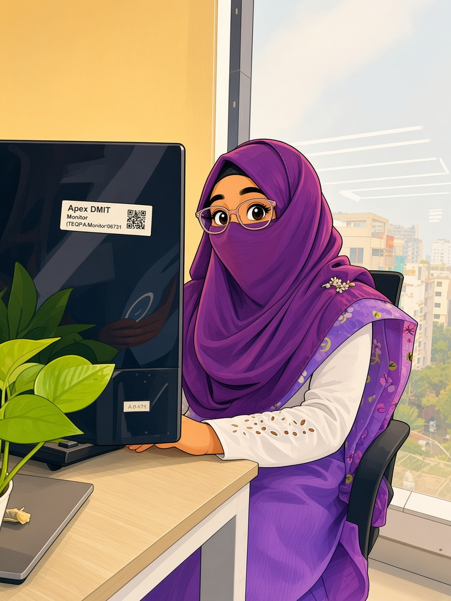
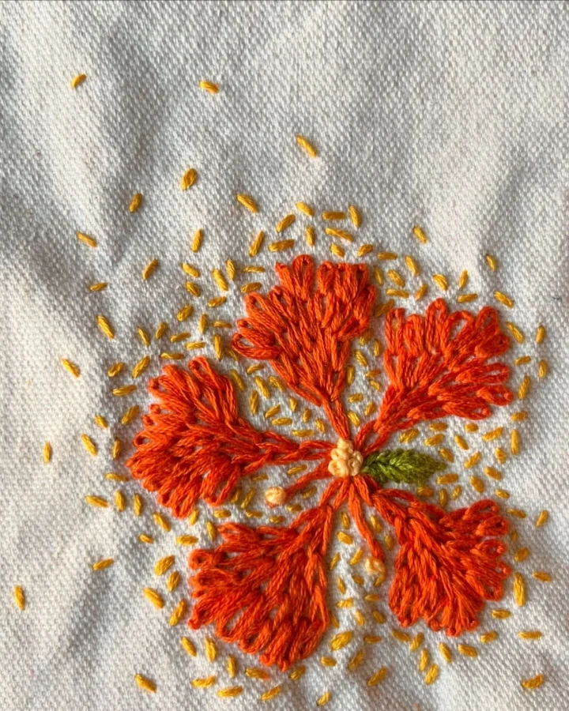
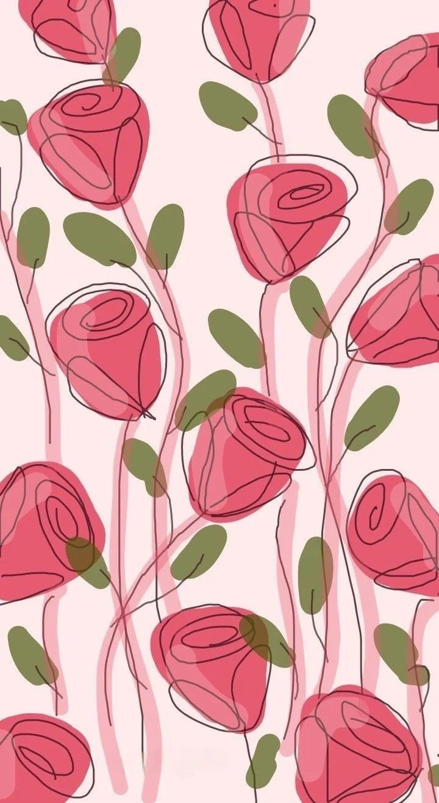
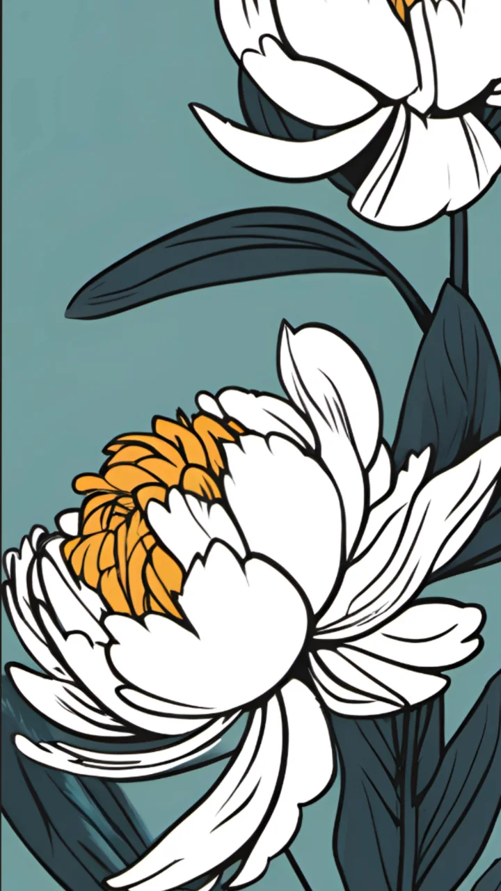
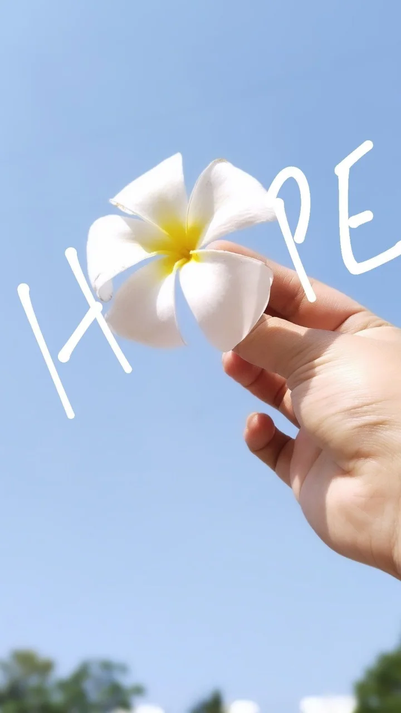
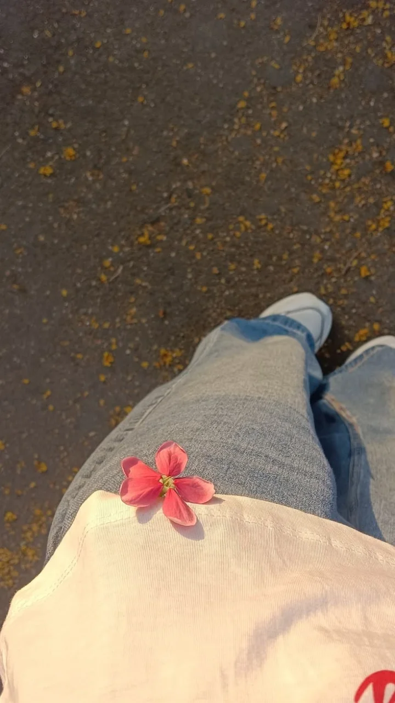
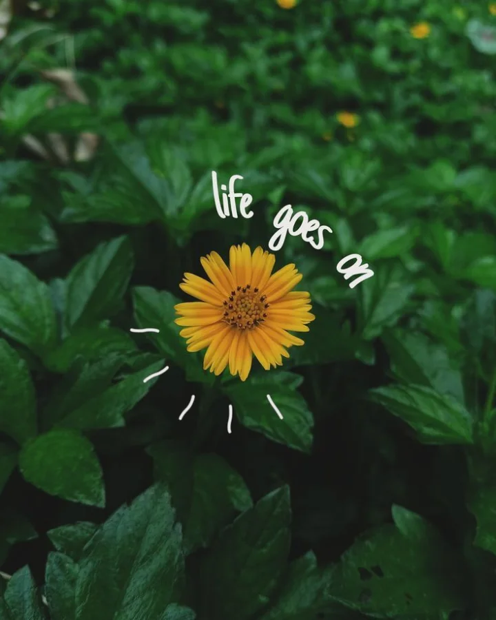

About
Five years on the unglamorous half of product design.
I design the software people are required to use — tax filing, ERP, HR, school administration. Not the work anyone puts on a moodboard, and the work where good decisions matter most.
- 20+products shipped in five years
- 30%sales increase, reported by the Atrium client
- 2 wksfrom design to a live site
UI/UX product designer at Apex DMIT, across proptech, CRM and hospitality. I took Atrium HMS from three modules to twelve in eight weeks, then designed and built its marketing site in two weeks — after which the client reported 30% more sales and twenty new companies engaged.
Government systems at Mysoft Heaven that citizens have no choice but to use — land tax filing, parliament, local government. Before that, data-dense enterprise dashboards at Nexis.
How I work
Research, wireframes and prototypes, plus the documents that keep a build honest: BRDs, backlogs and sprint plans. A computer science degree means I speak the engineers' language — I argue with them productively, not by email.
Where I want to go next is product management — not away from design, but through it. I already write the BRDs, run the backlog and plan the sprints, and on Atrium I shipped a product end to end, with no handoff in the middle. A finished course in digital product management, with UX strategy and AI-assisted design under way, makes the move deliberate rather than accidental.
Recognition & education
-
Outstanding Service AwardMysoft Heaven · 2023
-
Performance Recognition SchemeApex DMIT · 2024
-
BSc in Computer ScienceBUBT, Dhaka
Also on LinkedIn and Behance. I write about interface work at UI/UX Ghost.

My journey
Five years, three companies, and the same kind of software throughout — the sort people are required to use rather than choose.
-
2021 – 2022
Nexis
UI Designer
EnterpriseData-dense HR and admin dashboards, and the component framework underneath them.
- Designed Nexis HRM — dashboards built for reading, not browsing.
- Built a reusable component set so screens stayed consistent as the product grew.
-
2023 – 2024
Mysoft Heaven
UI/UX Designer
GovernmentPublic systems with no opt-out: if the design fails, the citizen has nowhere else to go.
- LD-Tax — land tax filing, web and app.
- Parliament and local government systems.
- Outstanding Service Award, 2023.
-
2024 – present Now
Apex DMIT
UI/UX Product Designer
Proptech, CRM & hospitalityMulti-tenant SaaS across three sectors, and the first time I shipped a product end to end without a handoff in the middle.
- Atrium HMS — three modules to twelve in eight weeks, across two connected systems.
- Designed and built the Atrium marketing site in two weeks, on an AI-driven development lifecycle.
- PropSoft.ai, Apex Protinidhi, Apex admin panel, Kazi Resort.
- Performance Recognition Scheme, 2024.
Certifications & training
Fifteen courses finished, including Digital Product Management, and two under way — the direction I am heading.
Currently studying
-
In progress
AI-Powered UI/UX Design: Master Claude, Figma MCP & Daily Automation
Ostad
-
In progress
UX Management: Strategy and Tactics
Interaction Design Foundation
Completed 15
- Digital Product ManagementNextgen Global Leaders
- Design for the 21st Century with Don NormanInteraction Design Foundation
- Human-Computer InteractionInteraction Design Foundation
- Design ThinkingInteraction Design Foundation
- Journey MappingInteraction Design Foundation
- Mobile UI DesignInteraction Design Foundation
- Foundations of User Experience (UX) DesignGoogle
- Conduct UX Research and Test Early ConceptsGoogle
- Agile Project ManagementGoogle
- Introduction to User Experience Principles and ProcessesUniversity of Michigan
- Web Design: Wireframes to PrototypesCalifornia Institute of the Arts
- Create High-Fidelity Designs and Prototypes in FigmaCoursera
- Innovation Through Design: Think, Make, Break, RepeatCoursera
- Training on FigmaUdemy
- Training on Graphic DesignNational Youth Development Center
What I do outside of work
I make things by hand. I draw, doodle, stitch and take photographs — none of it for a client or to a brief, which is exactly the point. It is the one place the work answers to nobody, and it is where the habit of looking closely came from, long before it had a job title attached to it.
-

Hand stitches -

Art -

Art -

Photography -

Photography -

Photography
Get in touch
Email is the fastest route, or message me on WhatsApp.